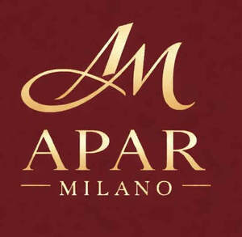

Trade Mark Journal No.2026/005 30 January 2026
UK00004323480 13 January 2026 (3,14,30)

- Class 3
- Cosmetic products for the shower; Cosmetics; Skincare cosmetics; Non-medicated cosmetics and toiletry preparations; Moisturisers [cosmetics]; Cosmetic products in the form of aerosols for skincare; Soap products; Skin fresheners [cosmetics]; Cosmetics and cosmetic preparations; Cleaning pads impregnated with cosmetics; Perfumery products; After-sun oils [cosmetics]; Non-medicated cosmetics; Cosmetics preparations; Organic cosmetics; Hair cosmetics; Tanning oils [cosmetics]; Cosmetics in the form of lotions; Perfume oils for the manufacture of cosmetic preparations; Self-tanning preparations [cosmetics]; Tanning gels [cosmetics]; Tanning preparations [cosmetics]; Make-up palettes containing cosmetics; Cosmetic products in the form of aerosols for skin care; Facial creams [cosmetics]; Decorative cosmetics; Bath powder [cosmetics]; Suncare lotions [for cosmetic use]; Room fragrancing products; Facial gels [cosmetics]; Douching preparations for personal sanitary or deodorant purposes [toiletries]; Mousses [cosmetics]; Beauty care cosmetics; Hair care lotions [for cosmetic use]; Cosmetic soaps; Anti-aging moisturizers used as cosmetics; Milks [cosmetics]; Sanitary preparations being toiletries; Skin moisturizers used as cosmetics; After-sun milk [cosmetics]; Cosmetic hair lotions; Multifunctional cosmetics; Antiperspirants [toiletries]; Fluid creams [cosmetics]; Toiletries; Sets of cosmetic oral care products; Teeth cleaning lotions; Roll-on deodorants [toiletries]; Suntan oils [cosmetics]; Tanning milks [cosmetics]; Humectant preparations [cosmetics]; Body creams [cosmetics]; Functional cosmetics; Cosmetic creams and lotions; Natural cosmetics; After-sun milks [cosmetics]; Cosmetics for animals; Preparations and products for fur care; Skin care cosmetics; Cleaner for cosmetic brushes; Night creams [cosmetics]; Cosmetics for suntanning; Lip stains [cosmetics]; Skin recovery creams [cosmetics].
- Class 14
- Jewellery in precious metals; Jewellery of precious metals; Watches made of precious metals; Jewelry boxes of precious metals; Threads of precious metal [jewellery, jewelry (Am.)]; Cases of precious metals for watches; Jewellery plated with precious metals; Wire of precious metal [jewellery, jewelry (Am.)]; Precious jewellery; Clothing ornaments of precious metals; Chains made of precious metals [jewellery]; Articles of jewellery made of precious metals; Jewelry cases of precious metal; Necklaces of precious metal; Jewelry boxes of precious metal; Earrings of precious metal; Precious metals; Small jewellery boxes of precious metals; Identification bracelets of precious metal [jewelry]; Articles of jewellery coated with precious metals; Bracelets of precious metal; Wire of precious metal [jewelry]; Chain mesh of precious metals [jewellery]; Cases of precious metals for jewels; Rings [jewellery] made of precious metal; Lapel pins of precious metals [jewellery]; Jewelry cases [caskets] of precious metal; Jewellery fashioned from non-precious metals; Fancy keyrings of precious metals; Articles of jewellery made of precious metal alloys; Wire of precious metal [jewellery]; Jewelry cases not of precious metal; Jewellery being articles of precious stones; Articles of jewellery with precious stones; Insignia of precious metals; Jewellery chain of precious metal for anklets; Jewellery cases [caskets] of precious metal; Jewellery made of crystal coated with precious metals; Cases of precious metals for clocks; Statues of precious metals; Ingots of precious metals; Bracelets [jewellery, jewelry (Am.)]; Ornaments [jewellery, jewelry (Am.)]; Jewellery made of precious stones; Gemstones, pearls and precious metals, and imitations thereof; Trinkets [jewellery, jewelry (Am.)]; Trophies of precious metals; Precious gemstones; Pearls [jewellery, jewelry (Am.)]; Busts of precious metals; Ivory [jewellery, jewelry (Am.)]; Amulets [jewellery, jewelry (Am.)]; Jewellery incorporating precious stones; Necklaces [jewellery, jewelry (Am.)]; Jewellery coated with precious metal alloys; Precious metals and their alloys; Small jewelry boxes, not of precious metal; Rings [jewellery, jewelry (Am.)]; Charms [jewellery, jewelry (Am.)]; Cuff links made of precious metals with precious stones; Gold thread [jewellery, jewelry (Am.)]; Tie clasps of precious metals; Rings coated with precious metals; Key rings of precious metals; Rings of precious metal; Medals made of precious metals; Lockets [jewellery, jewelry (Am.)]; Threads of precious metals; Jewelry; Semi-worked precious metals; Precious jewels; Key charms of precious metals; Semi-finished articles of precious stones for use in the manufacture of jewellery; Silver watches; Alloys of precious metal; Precious metal alloys; Shoe ornaments of precious metal; Ornaments (Shoe -) of precious metal; Statuettes of precious metal; Objet d'art made of precious metals; Cuff links made of precious metals with semi-precious stones.
- Class 30
- Chocolate coffee; Aerated beverages [with coffee, cocoa or chocolate base]; Aerated drinks [with coffee, cocoa or chocolate base]; Coffee beverages with milk; Coffee, teas and cocoa and substitutes therefor; Cocoa beverages with milk; Mixtures of malt coffee with cocoa; Coffee; Coffee substitutes [artificial coffee or vegetable preparations for use as coffee]; Tea beverages with milk; Mixtures of malt coffee with coffee; Cocoa beverages; Cocoa drinks; Coffee beverages; Coffee extracts for use as substitutes for coffee; Coffee essences for use as substitutes for coffee; Malt coffee; Chocolate beverages with milk; Chocolate for confectionery and bread; Coffee flavorings; Mixtures of malt coffee extracts with coffee; Sugar confectionery; Chocolate pastries; Iced coffee; Coffee drinks; Tea cakes; Tea beverages; Coffee beans; Unroasted coffee; Coffee (Unroasted -); Coffee flavourings; Flavoured coffee; Coffee [roasted, powdered, granulated, or in drinks]; Milk chocolate teacakes; Cocoa; Chocolate beverages; Flavourings of tea for food or beverages; Boiled sugar confectionery; Candy with cocoa; Chocolate biscuits; Coffee bags; Foamed sugar sweets; Chocolate-coated sugar confectionery; Decaffeinated coffee; Tea; Flavoured sugar confectionery; Cocoa [roasted, powdered, granulated, or in drinks]; Cocoa for use in making beverages; Unroasted coffee beans; Coffee oils; Sugar-coated coffee beans; Chocolate bark containing ground coffee beans; Beverages with coffee base; Beverages with a coffee base; Chocolate syrups for the preparation of chocolate based beverages; Malt coffee extracts; Beverages with a cocoa base; Beverages made from cocoa; Extracts of coffee for use as flavours in foodstuffs; Sugar candy [for food]; Chocolate sweets; Powdered coffee in drip bags; Chicory for use as substitutes for coffee; Chocolate confectionery; Caffeine-free coffee; Milk chocolate; Extracts of coffee for use as flavours in beverages; Chai tea; Mixtures of coffee and malt; Beverages made from coffee; Beverages made of coffee; Chocolate confectionary; Chocolate beverages containing milk; Chocolate drink preparations flavoured with banana; Ice beverages with a cocoa base; Chocolate-based beverages with milk; Coffee based beverages; Iced tea; Tea (Iced -); Sweets (Non-medicated -) in the nature of sugar confectionery; Chocolate confectionery products; Confectionery chocolate products; Confectionery made of sugar; Roasted coffee beans; Prepared cocoa and cocoa-based beverages; Substitutes (Coffee -); Coffee substitutes; Cocoa products; Chocolate cakes; Chocolate flavoured beverages; Prepared coffee and coffee-based beverages; Chocolate fillings for bakery products; Tea bags for making non-medicated tea; Foodstuffs made of sugar for sweetening desserts; Roasted brown rice tea; Beverages with tea base; Beverages with a tea base; Extracts of cocoa for use as flavours in beverages; Black tea [English tea]; Peppermint tea; Chicory [coffee substitute]; Barley tea; Milk chocolates; Mixtures of coffee essences and coffee extracts; Chocolate drink preparations flavoured with mocha; Fruit flavoured tea [other than medicinal]; Chocolate syrups; Barley for use as a coffee substitute; Sugar confectionery (Non-medicated -); Rooibos tea; Coffee extracts; Freeze-dried coffee; Roasted barley and malt for use as substitute for coffee; Fruit sugar.
Jokolo Ltd